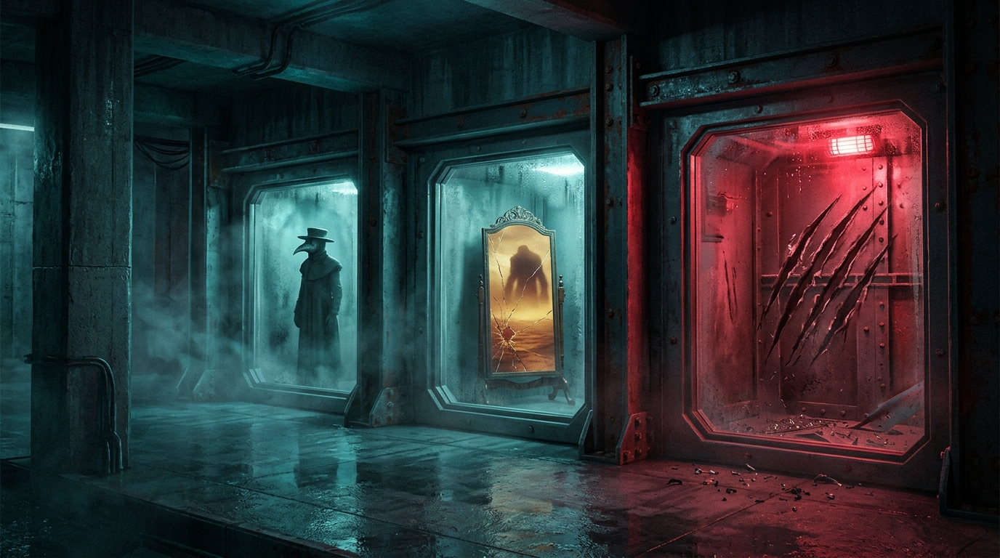

SCP-049
EUCLID
疫医 · The Plague Doctor
身着鸟嘴长袍的人形异常，执着于清除其口中的「瘟疫」。与其直接接触将导致 生命体征瞬间中止，并产生不可逆的复生效应。
直达输入：
049
维基原档 ↗
专为 PC 打造的开源 SCP 基金会维基桌面客户端。将中文分部与英文主站收束进同一座沉浸式多标签终端——支持 深夜三点护眼暗黑排版、 原版复杂特效无缝切回、按系列分批次离线归档，以及全站通用的 Wikidot 账号凭证，让每一份 模因危害与收容失效记录 都触手可及。
CONTAINMENT WING // ARCHIVE SPECIMENS
在客户端按 Ctrl+L 输入编号（如 049、682、093、3008）即可直达阅读，或一键离线打包整组系列。

身着鸟嘴长袍的人形异常，执着于清除其口中的「瘟疫」。与其直接接触将导致 生命体征瞬间中止，并产生不可逆的复生效应。
049
维基原档 ↗
一枚能随持握者悔恨程度变色的红色朱砂圆盘。将其贴合镜面后可步入 被「不洁者」笼罩的荒芜世界，五色测试记录层层递进。
093
维基原档 ↗
极端敌视一切生命体的高智能爬虫类异常，具备恐怖的再生与环境适应能力。必须长期浸泡于高浓度盐酸收容池，任何 处决实验均告失败。
682
维基原档 ↗
无论相隔多远，哪怕仅通过监控画面或像素级照片目击其面部，对象都将进入不可阻挡的狂暴追猎状态——四个像素，四个该死的像素。
096
维基原档 ↗
入口随时消失的无尽家具卖场内部空间。每当广播响起「商场现已打烊，请离开建筑」，无面店员便会在熄灯后 在货架走廊间展开巡猎。
3008
维基原档 ↗
一座自我隐匿的逆模因异常。观察者无法记住它的任何正面属性，我们唯一能够确认的事实只有一条：它不是球形的。
055
维基原档 ↗
SPECIAL CONTAINMENT PROTOCOLS
既保留浏览长篇怪谈档案时的沉静专注，又不牺牲任何 Wikidot 复杂版式、互动页面与多标签效率。
内置 SCP 中文分部与英文主站，阅读任意文档时可点击顶部 ⇄ EN / CN 直接对照原文或译文，Ctrl+点击 在后台新标签打开。
纯净模式提供暗黑 / 护眼纸色 / 明亮三套原生主题、字号行距版宽调节、自动大纲 TOC 与页内查找；遇到复杂特效、音频或互动 iframe 可一键切回原版模式。
离线库支持按系列每批 20 / 50 / 100 / 200 篇顺序下载、自动跳过已缓存断点续传、失败自动重试与图片本地化，还可一键导出 Markdown 或单文件 HTML。
覆盖主系列 I–X、中文原创 I–IV、001 提案、搞笑与已解明目录；接入 Crom GraphQL 接口支持全站关键词检索、分级/标签筛选与分类随机抽取。
主站、中分与其他分部共用同一 Wikidot 账号。通过共享持久化 Session 的官方窗口一次登录即可全站通用，绝不触碰或明文保存密码。
支持全局系统代理、直连或自定义 HTTP / SOCKS5 代理与镜像域名测速；界面支持中英热切换，并预留可扩展语言包与分部接口，方便后续加入日文分部等。
RELEASE MANIFEST // V1.0.0
单文件绿色便携版，双击即开；收藏夹、分组备注、阅读历史与进度记忆均安全保存在本机用户目录，无遥测、无广告。
Ctrl+L 编号直达 / 关键词搜索Ctrl+Shift+E 一键展开全部折叠块Ctrl+F 查找（命中折叠块自动展开）Ctrl+T 新建 · Ctrl+W 关闭 · 中键新开LICENSING & ATTRIBUTION // COMPLIANCE
本项目为社区独立开发的开源第三方客户端，客户端代码采用 MIT 协议开源；与 SCP 基金会相关的一切文档内容、专有概念及衍生徽标/插画均严格遵循 知识共享 署名-相同方式共享 3.0 未本地化版本协议（CC BY-SA 3.0）。
项目仓库不内置任何 SCP 维基正文或受限图片（亦不包含加藤泉 *Untitled 2004* 照片），所有文档均在使用时由官网实时获取并在阅读页与导出文件中保留原文链接和协议署名。
ADDENDUM // FREQUENTLY ASKED QUESTIONS
点击下方档案条即可展开或收起说明。
是的，完全共用。英文主站、中文分部以及日文等国际分部均托管在 Wikidot 平台上，共用同一套 .wikidot.com 账号与登录态。在客户端右上角通过官方 Wikidot 窗口登录一次即可全站通用；登录后切换至「原版」模式可直接为条目评分、查看受限页面或参与讨论区互动。
切到左侧边栏「离线」标签，点击「分批下载」，选择目标系列（例如 CN 系列 I 001–999 或 CN 原创系列）与每批篇数（20 / 50 / 100 / 200 篇），点击开始即可。客户端采用 2 并发温和限速与单篇失败自动重试，默认跳过已缓存条目支持断点续传，每批下完会自动推进到下一批，也可按需勾选「含图片」实现彻底断网看图。
当纯净模式检测到页面包含复杂自定义 CSS 或交互式 HTML iframe 组件时，会在文首给出提示条；只需点击顶部工具栏的「原版」按钮即可在当前标签页无缝切入独立 Chromium WebView，100% 还原原站特效与交互脚本，同时仍可使用一键全展开折叠块与进度同步。
点击右上角齿轮打开「设置」，可在「网络代理设置」中选用系统代理或自定义 HTTP / SOCKS5 代理（全局同步作用于文章抓取、原版浏览、账号登录与图片缓存），也支持自定义中英文站点镜像地址并一键测试延迟。